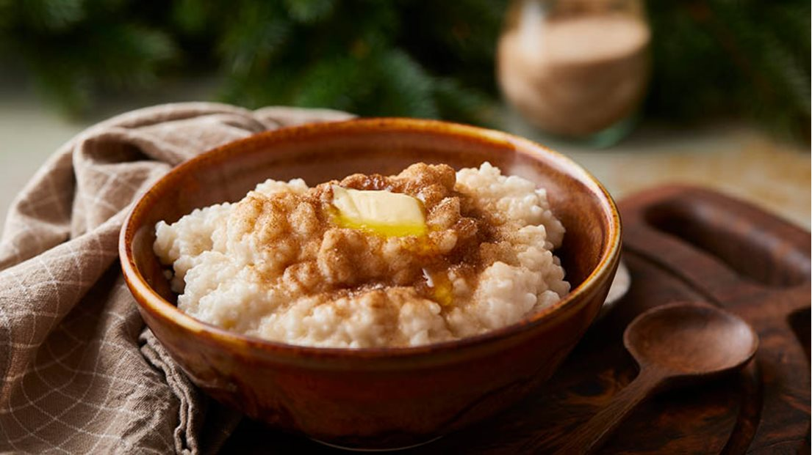

Risengroed

How to make risengroed
Here you will learn all the steps to make risengroed!
Risengroed is a traditional Scandinavian Yuletide dish enjoyed by humans and tomter alike
Ingredients
- Milk
- Water
- Rice
- Cinnamon
- Sugar
- Salt
- Butter
Steps
- Cook water and rice in a large cauldron
- Add milk and boil
- Add salt
- The risengroed is finished!
- Serve with cinnamon, sugar, and a big chunk of butter